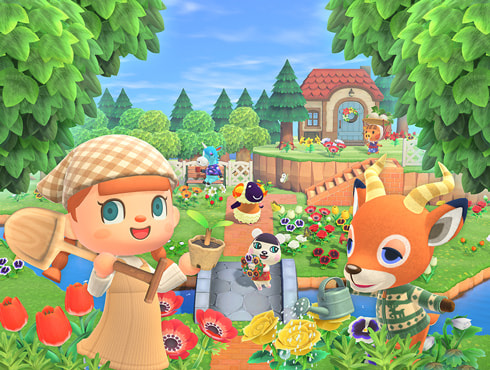

Build your own island from the ground up (LITERALLY).
Spend your days crafting or learning how to craft nets, fireplaces, chairs and tables, gathering butterflies with your net, or fish with your fishing rod, and picking up clams by the beach!, and maybe even hopping on a plane to meet other players from the airport on your island!
You can fish along the coast, catch flying critters in your net and even dig for rocks and minerals, all while getting cash on your PHONE!
You can get a house after your humble beginning in a tent, and after you get some money, you can design your houses' wallpaper, floor and even your own clothes and your entire wardrobe if you want! Plus your mom is always checking up on you, sometimes with gifts in the mail for you!
In Animal Crossing, you dont "BEAT" the game. You slowly evolve your island, inviting other animal citizens or villagers from other islands, some that might even be rare. You can build roads, shops and your own house and evolve yoru entire city! You can design everything on the island including the island itself, your appearance and your outfits, and your home, plus other islands you discover on the way! Some islands have different terrains, like spring, winter, fall, summer, bamboo, waterfall and rocky islands! For all of these very awesome, amazing, wonderful and beautiful reasons, you should play AAAANIMAL CRRROOSSSING plus I am just sooo convinving that you're going to play now right!
